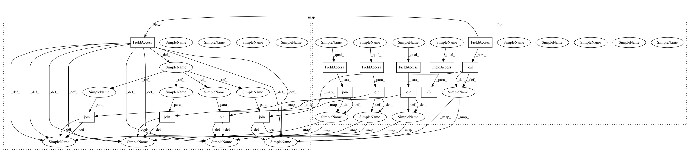

a343ff3be889983ad0e39f47a070ac23d18fa21e,invesalius/gui/frame.py,ObjectToolBar,__init_items,#ObjectToolBar#,759
Before Change
def __init_items(self):
if sys.platform == "darwin":
BMP_ROTATE = wx.Bitmap(os.path.join(const.ICON_DIR,
"tool_rotate_original.gif"),
wx.BITMAP_TYPE_GIF)
BMP_MOVE =wx.Bitmap(os.path.join(const.ICON_DIR,
"tool_translate_original.png"),
wx.BITMAP_TYPE_PNG)
BMP_ZOOM = wx.Bitmap(os.path.join(const.ICON_DIR,
"tool_zoom_original.png"),
wx.BITMAP_TYPE_PNG)
BMP_ZOOM_SELECT = wx.Bitmap(os.path.join(const.ICON_DIR,
"tool_zoom_select_original.png"),
wx.BITMAP_TYPE_PNG)
BMP_CONTRAST = wx.Bitmap(os.path.join(const.ICON_DIR,
"tool_contrast_original.png"),
wx.BITMAP_TYPE_PNG)
else:
BMP_ROTATE = wx.Bitmap(os.path.join(const.ICON_DIR,
"tool_rotate.gif"),
wx.BITMAP_TYPE_GIF)
BMP_MOVE = wx.Bitmap(os.path.join(const.ICON_DIR,
"tool_translate.gif"),
wx.BITMAP_TYPE_GIF)
BMP_ZOOM = wx.Bitmap(os.path.join(const.ICON_DIR, "tool_zoom.png"),
wx.BITMAP_TYPE_PNG)
BMP_ZOOM_SELECT = wx.Bitmap(os.path.join(const.ICON_DIR,
"tool_zoom_select.png"),
wx.BITMAP_TYPE_PNG)
BMP_CONTRAST = wx.Bitmap(os.path.join(const.ICON_DIR,
"tool_contrast.png"),
wx.BITMAP_TYPE_PNG)
self.AddLabelTool(const.STATE_ZOOM,
_("Zoom"),
BMP_ZOOM,
kind = wx.ITEM_CHECK)
self.AddLabelTool(const.STATE_ZOOM_SL,
_("Zoom based on selection"),
BMP_ZOOM_SELECT,
kind = wx.ITEM_CHECK)
self.AddLabelTool(const.STATE_SPIN,
_("Rotate"), BMP_ROTATE,
kind = wx.ITEM_CHECK)
self.AddLabelTool(const.STATE_PAN,
_("Move"), BMP_MOVE,
kind = wx.ITEM_CHECK)
self.AddLabelTool(const.STATE_WL,
_("Window and Level"), BMP_CONTRAST,
kind = wx.ITEM_CHECK)
self.enable_items = [const.STATE_WL, const.STATE_PAN, const.STATE_SPIN,
const.STATE_ZOOM_SL, const.STATE_ZOOM,]
self.Realize()
self.SetStateProjectClose()
After Change
Add tools into toolbar.
d = const.ICON_DIR
if sys.platform == "darwin":
path = os.path.join(d, "tool_rotate_original.gif")
BMP_ROTATE = wx.Bitmap(path, wx.BITMAP_TYPE_GIF)
path = os.path.join(d, "tool_translate_original.png")
BMP_MOVE =wx.Bitmap(path, wx.BITMAP_TYPE_PNG)
path = os.path.join(d, "tool_zoom_original.png")
BMP_ZOOM = wx.Bitmap(path, wx.BITMAP_TYPE_PNG)
path = os.path.join(d, "tool_zoom_select_original.png")
BMP_ZOOM_SELECT = wx.Bitmap(path, wx.BITMAP_TYPE_PNG)
path = os.path.join(d, "tool_contrast_original.png")
BMP_CONTRAST = wx.Bitmap(path, wx.BITMAP_TYPE_PNG)
else:
path = os.path.join(d, "tool_rotate.gif")
BMP_ROTATE = wx.Bitmap(path, wx.BITMAP_TYPE_GIF)
path = os.path.join(d, "tool_translate.png")
BMP_MOVE =wx.Bitmap(path, wx.BITMAP_TYPE_PNG)
path = os.path.join(d, "tool_zoom.png")
BMP_ZOOM = wx.Bitmap(path, wx.BITMAP_TYPE_PNG)
path = os.path.join(d, "tool_zoom_select.png")
BMP_ZOOM_SELECT = wx.Bitmap(path, wx.BITMAP_TYPE_PNG)
path = os.path.join(d, "tool_contrast.png")
BMP_CONTRAST = wx.Bitmap(path, wx.BITMAP_TYPE_PNG)
In pattern: SUPERPATTERN
Frequency: 3
Non-data size: 15
Instances
Project Name: invesalius/invesalius3
Commit Name: a343ff3be889983ad0e39f47a070ac23d18fa21e
Time: 2010-02-18
Author: tatiana.alchueyr@gmail.com
File Name: invesalius/gui/frame.py
Class Name: ObjectToolBar
Method Name: __init_items
Project Name: invesalius/invesalius3
Commit Name: a343ff3be889983ad0e39f47a070ac23d18fa21e
Time: 2010-02-18
Author: tatiana.alchueyr@gmail.com
File Name: invesalius/gui/frame.py
Class Name: SliceToolBar
Method Name: __init_items
Project Name: invesalius/invesalius3
Commit Name: a343ff3be889983ad0e39f47a070ac23d18fa21e
Time: 2010-02-18
Author: tatiana.alchueyr@gmail.com
File Name: invesalius/gui/frame.py
Class Name: ProjectToolBar
Method Name: __init_items
Project Name: invesalius/invesalius3
Commit Name: a343ff3be889983ad0e39f47a070ac23d18fa21e
Time: 2010-02-18
Author: tatiana.alchueyr@gmail.com
File Name: invesalius/gui/frame.py
Class Name: ObjectToolBar
Method Name: __init_items